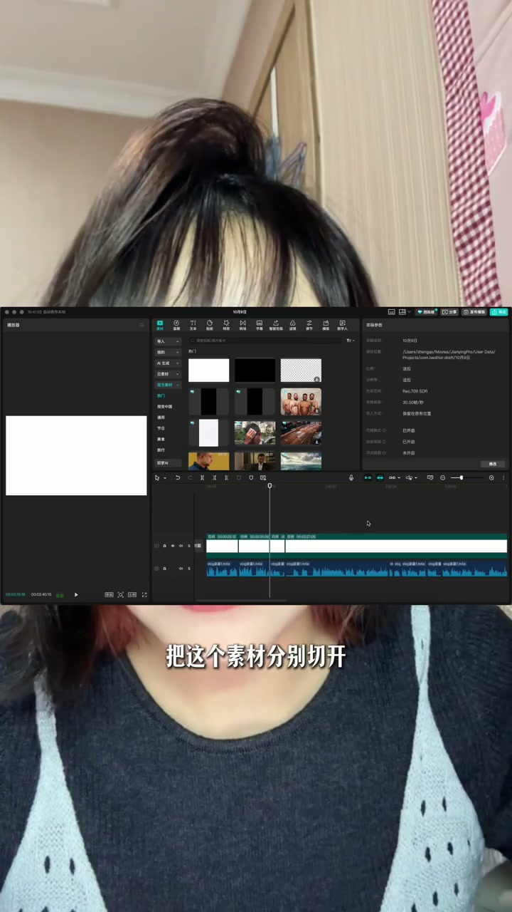

内容要点
[00:00] 10个单子有8个单子都是vlog
[00:02] 这就是节假日后解极式的现状
[00:04] 那刚好我刚剪完一条vlog
[00:06] 跟大家说一下我最近剪vlog的一些小心得
[00:10] 还有我刚学到的一些邪门的剪vlog的方法
[00:13] 一般来讲的我剪vlog就是先拿到素材
[00:15] 然后把素材按照排斥的时间顺序
[00:17] 直接导入进那个时间轴里
[00:18] 我一般是会直接全部无微素
[00:20] 然后快速的去越来整个素材
[00:21] 然后再去听文案用这段剪口波
[00:23] 把那个文案都给分开
[00:24] 之后就是不断的把画面对上这个文案就可以了
[00:26] 但是我就发现一个问题非常垃圾效率
[00:29] 就是你不断的在往后
[00:30] 因为你素材铺得太长了
[00:32] 有些时候对文案的一个场景你突然反应不过来
[00:34] 就很容易不清楚自己到底把这个素材铺到哪去了
[00:37] 还得来回来回的去找这个素材的位置
[00:39] 所以在我这几篇剪的时候
[00:41] 我就发现拿到素材之后
[00:42] 你直接把整个素材归为两个大类
[00:44] 一个是主体人物类
[00:45] 一个就是其他类
[00:47] 那其他类就包括了非主体人物
[00:49] 以及空景
[00:50] 还有一些补充镜头
[00:51] 先导入主体镜头
[00:52] 然后把这些都按照时间顺序去排斥
[00:55] 然后在音频上有需要补充画面的时候
[00:57] 再去导入这些非主体素材
[00:59] 其实这样子的话
[01:00] 你的整个脑子的思路是非常清晰的
[01:02] 而且也会更方便你后期做效果
[01:04] 然后还有一个我前两天刷到了一个协修的方法
[01:07] 具体是拿博主火网
[01:09] 大家如果有知道的话也可以帮我Ate一下
[01:11] 大概意思就是前面还是跟我的方法一样
[01:13] 先把整个的文案录音给剪了
[01:16] 剪了之后
[01:16] 它是直接铺了一张素材的底
[01:18] 然后拉到这个录音的墨尾
[01:20] 然后根据这一句话一句话
[01:22] 或者是一个场景一个场景
[01:23] 把这个素材分别切开
[01:25] 然后拿Vlog的素材不断的去替换整每一段
[01:28] 这个方法真的是非常适用于
[01:31] 你自己对素材非常了解的情况下
[01:33] 尤其是剪自己的Vlog的时候
[01:34] 就真的就是适办功倍
[01:36] 你都完全不需要想
[01:38] 直接嘎嘎嘎嘎嘎就切就换
[01:41] 就非常快真的非常快
[01:43] 大家如果是自己国庆中秋期间的Vlog
[01:45] 也可以尝试这样剪一下
[01:46] 真的就是完完全全的协修
[01:48] 大家还有什么要剪Vlog的好方法
[01:50] 也可以过来告诉我


